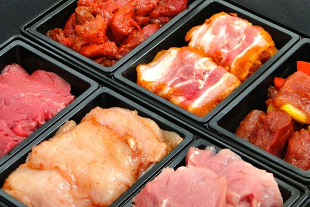
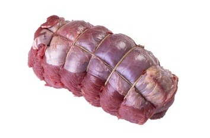
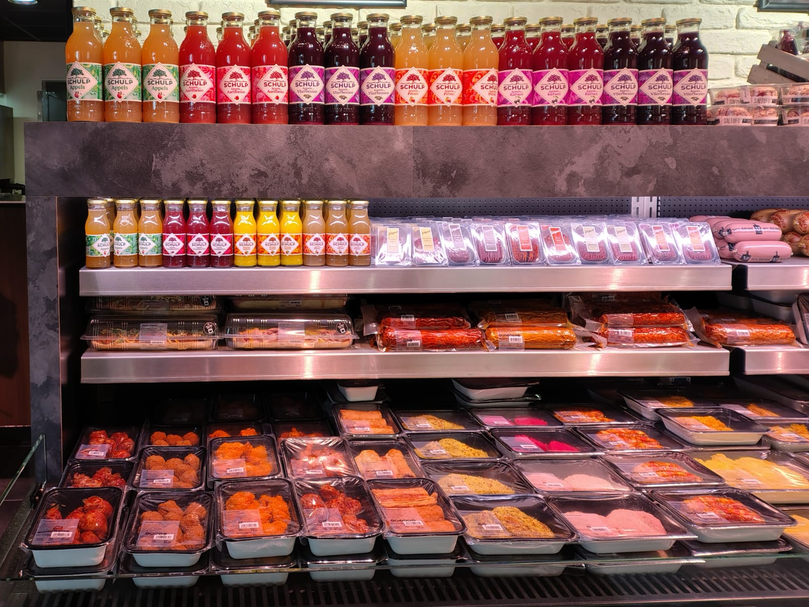
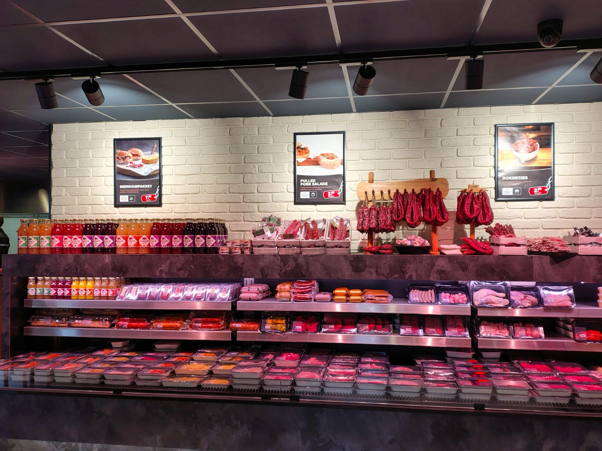
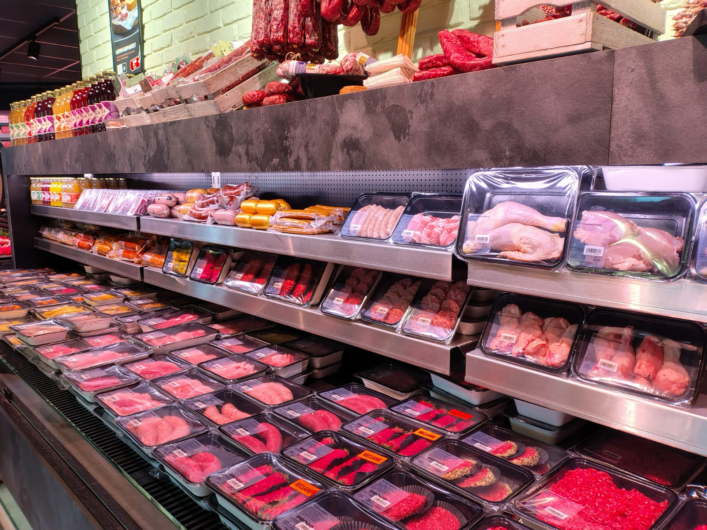
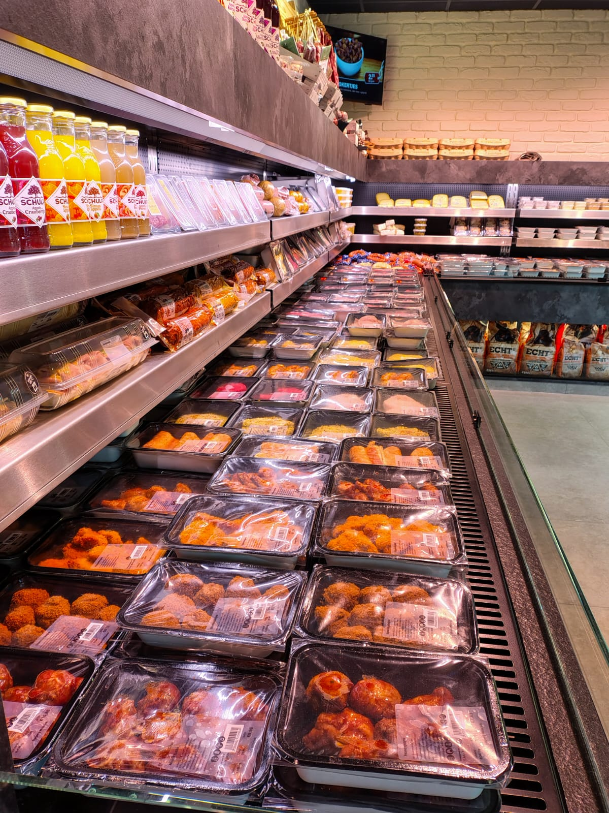
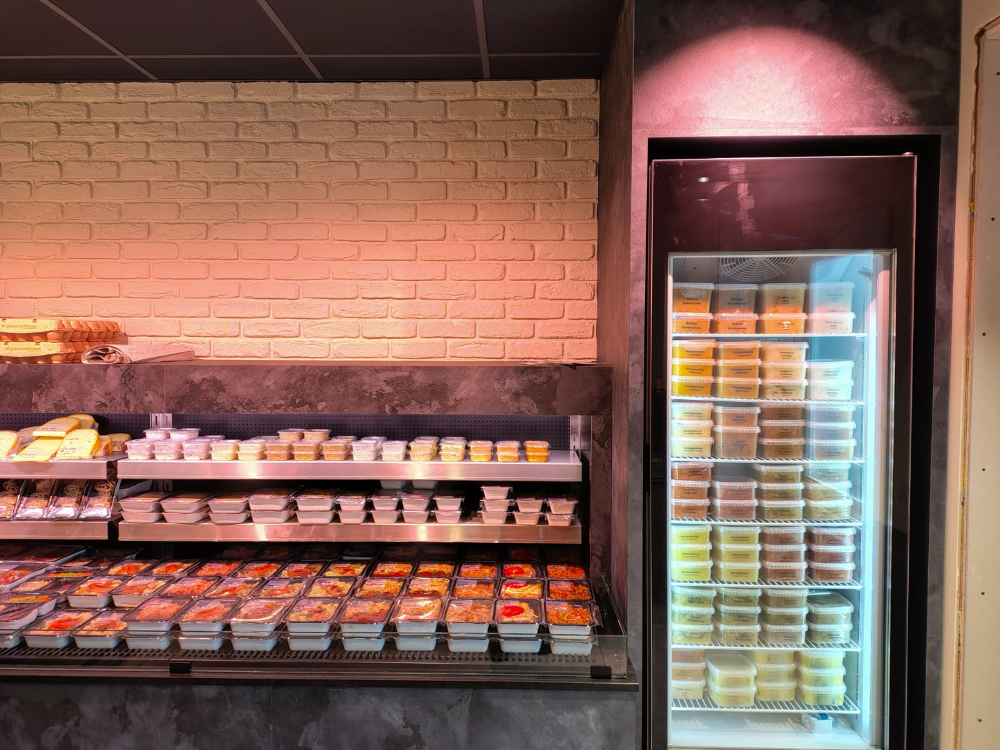
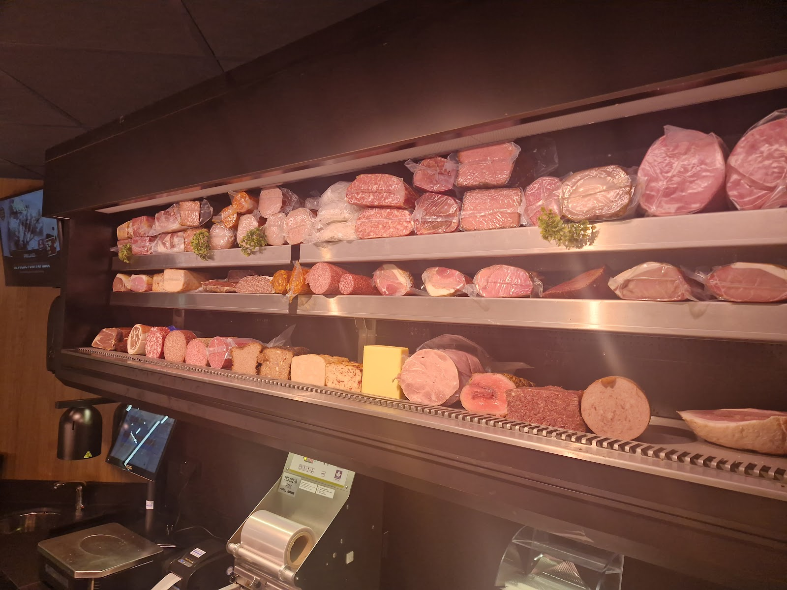
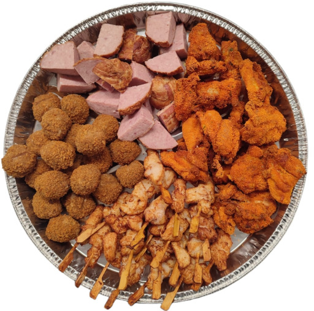
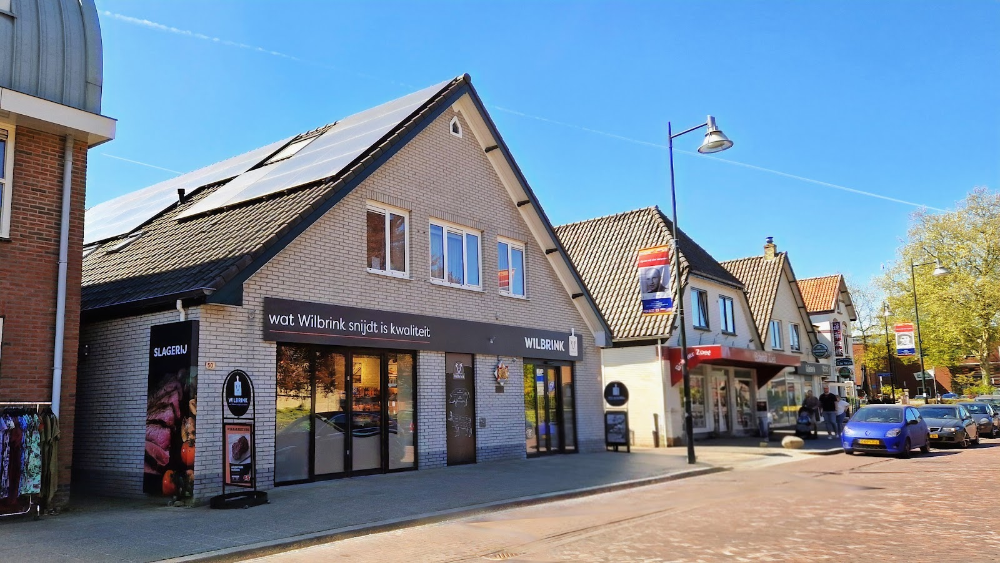

Slagerij in het hart van Beekbergen
Al sinds 1905
achter het
hakblok.
Wij snijden zelf uit, maken onze eigen worst en halen ons rundvlees uit de omgeving van Beekbergen. Zo weten we precies wat er in de toonbank ligt.
4,5 op Google, uit 71 reviews
Kerst bij Wilbrink? Bestel uiterlijk zaterdag 19 december.
Zo staat de kersttafel klaar.
Hier ziet u een greep uit wat u kunt bestellen voor de kerstdagen en oud en nieuw. De overige producten vindt u gewoon in de winkel.
Of bel 055 506 1250

Gourmet en fondue
- Gourmet Traditioneel€ 7,98 p.p.Gevarieerd en lekker voor iedereen
- Gourmet Bistro€ 9,98 p.p.Lekker luxe
- Kindergourmet€ 4,98 p.p.Voor de jonge gourmetter
- Fondueschotel€ 6,98 p.p.Compleet fonduepakket
- Groentenpakket deluxe€ 14,98Een luxe aanvulling voor uw gourmet, voor 4 personen
Rollades
Prijzen per 100 gram
- Half om half rollade€ 2,29Favoriet op de Veluwe
- Doorregen runderrollade€ 2,35Lekkere malse rollade
- Toscaanse rollade€ 2,49Speciale varkensfiletrollade
- Kiprollade boerderijkip€ 2,69Lekker gekruid
- Runderlenderollade€ 3,35Mag lekker rosé blijven


Hapjes en salades
- Snacksteen 'Beekbergen'€ 24,90Ronde steen gevuld met circa 48 hapjes
- Partypan gemixt€ 36,90
- Carpaccio€ 5,99Heerlijk voorgerecht, per portie
- Rundvleessalade opgemaakt€ 6,49 p.p.Mooi opgemaakte schaal
- Zalmsalade opgemaakt€ 7,49 p.p.Mooi opgemaakte schaal
Bestellen voor kerst kan tot en met zaterdag 19 december. Vragen? Mail gerust naar info@slagerijwilbrink.nl.
Kijk maar wat er in de toonbank ligt.

- Vers vlees
- Vlugklaar
- Vleeswaren
- Gourmet
- Rollades
- BBQ
- Snacks & worsten
- Salades
- Maaltijden
- Belegde broodjes
- Cadeaus

Worst uit onze eigen worstmakerij
Runderen en varkens snijden we zelf uit. In onze eigen worstmakerij bereiden we op traditionele wijze de lekkerste worsten.
"Hele vriendelijke medewerkers, groot assortiment (ook hapjes, lekker voor op de camping). De echte aanrader was de huisgemaakte fuet! Ze hebben verschillende smaken, wij hadden de chorizo en die was heerlijk."

Vlugklaar
Voor de dagen dat het snel moet. De bakken vlugklaar liggen naast het verse vlees, dus u neemt ze zo mee.

Huisgemaakte maaltijden
Geen zin om te koken? Bij ons vindt u een ruim assortiment aan verse maaltijden, gewoon in eigen huis gemaakt.
Van Jannes de slachter tot Lammert.
-
1905
Jannes Wilbrink richt de slagerij op. In Beekbergen is hij beter bekend als Jannes de slachter.
-
Nu
Zijn achterkleinzoon Lammert Wilbrink staat met dezelfde passie achter het hakblok.
Echt Veluws rundvlees
Ons rundvlees komt rechtstreeks uit de omgeving van Beekbergen. De dieren zijn in Nederland geboren en gevoed met natuurlijke, lokale producten. Zo weten we altijd precies wat we u verkopen.
Vragen over herkomst of allergenen? Bel of mail ons gerust.


Een cadeau dat niemand laat staan.
Van heerlijke rollades tot rijk gevulde vleesschotels. We stellen ook, geheel in overleg, pakketten op maat samen.
- Voor bedrijven: voeg gerust een product van uw eigen bedrijf toe.
- Lekkernijen van onze buurman Bakkerij Zoet gaan er ook in.
- Of iets sterkers van Slijterij 't Keteltje.
Omdat we alles met zorg en aandacht bereiden, vragen we u om op tijd te bestellen.

Openingstijden
- Maandag11:00 - 18:00
- Dinsdag08:30 - 18:00
- Woensdag08:30 - 18:00
- Donderdag08:30 - 18:00
- Vrijdag08:30 - 18:00
- Zaterdag08:00 - 16:00
- ZondagGesloten
Kom gerust langs, ook op vakantie.
"Ik was hier 2x tijdens mijn vakantie, aardige mensen en super lekker vlees en meer."
"Goede slager en werd vriendelijk behandeld ook alwas ik geen locale klant."